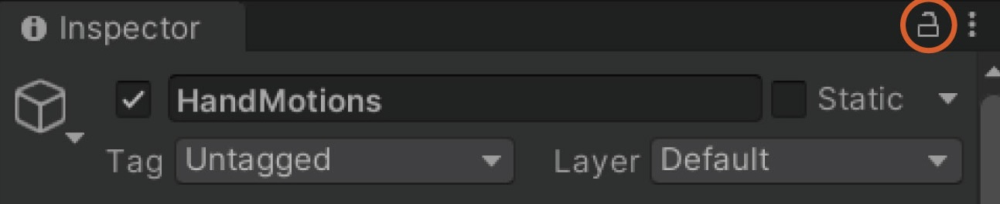

久保, 藤木, 安井, 山本
2025.00.00に更新
久保, 藤木, 安井, 山本
2025.00.00に更新
この章では、モーションの制作方法をLevelに分けて説明していきます。
ここでは、左右の腕の動作の作成と、それに必要なパラメータの説明を行います。
既存の動作をコピーしてから動作部位を変更しても、期待通りに動きません。 動作部位を変更する場合は、画面中央上にある▶︎ボタンを押し、停止させてから再度同じボタンを押し、起動し直してください。 また、Modify to the current positionを押しても見た目は何も変化しません。
腕全体を使用したモーションの基礎となる作成方法です。 左右の手を操作し、現在の位置から操作後の位置・角度まで動かします。
1. HierarchyウィンドウからHandMotionsを選択し、Inspectorウィンドウをロックします。 2. 既存の動作をコピーし、名前IDを変更します。 3. 動作部位名にRightHandControllerもしくはLeftHandControllerを書き込みます。 4. 動作部位の右端にある⦿ボタンを押し、3と同名のオブジェクトを選択します。 5. Motion Hand Data内の名前IDを変更します。 6. Debug SettingsのMotion Edit Mode Onをクリックします。 7. HierarchyウィンドウからRightHandControllerもしくはLeftHandControllerを選択し、 Scene画面上で動かしたい位置・角度に動かします。 8. 3で命名したID名に対応するModify to the current positionをクリックします。 9. Motion Hand Data内にある移動速度[m/s]もしくは移動時間[msec]と姿勢保持時間[msec]を調整します。 その後、移動軌跡（座標）と回転軌跡（角度）の右にあるグラフを押し、お好みのグラフに変更します。 10. 最後に、manageのSave to fileをクリックします。
ウィンドウをロックするには、以下のように🔒を使用します。 
Level1を発展させ、より複雑な動きを作成します。
1. Motion Hand Dataの右下にある+ボタンを押し、追加を行います。 2. Motion Hand Data内の名前IDを変更します。 3. Level1の5 ~ 10を繰り返し行います。 4. Level2の1 ~ 3を繰り返し行い、モーションの作成を行います。
Level1を発展させ、指の動作も追加します。
1. Motion Hand Data内からFinger Data → +ボタンと押します。 2. 追加した要素を押し、動作部位名に動かしたい指をBodyBase_Jointから選び、書き込みます。 （_Jointと最後につくもの）。 3. 最後に、manageのSave to fileをクリックします。
Level2を発展させ、人間のように曲線を帯びた動作を作成します。
1. Level2の通りに、Motion Hand Dataに3つ以上の動作を作成します。 2. 最初と最後以外の動作の、Motion Hand Data内にあるベジェ曲線の中間点にチェックします。 3. 2で操作した動作に対応するModify to the current positionをクリックします。 4. 最後に、manageのSave to fileをクリックします。
Level3を発展させ、腕の位置・角度を自由に調節します。
1. Level1の通りに、動作を作成する。 2. 調節したい動作のMotion Hand Data内からIKにオフセットをかける → +ボタンと押します。 3. 追加した要素を押し、動作部位名に調整したい軸をBodyBase_Jointから選び、書き込みます。 （_Jointと最後につくもの）。 4. 相対角度を調整します。 5. 最後に、manageのSave to fileをクリックします。
作成した動作を左右反転にします。
1. 1 ~ 5の通りに、動作を作成する。 2. swap the allを押します。 3. 最後に、manageのSave to fileをクリックします。
ベジェ曲線を使用することで丸みを帯びた動作を作ることができ、人間らしさが出る様になる。 以下の様に、id名を1、2、3と名付け、2のIs Bezier Curve Pointをオンにすると以下の画像のように曲線の移動が可能になります。 ベジェ曲線は連続で何個も使用可能であり、より複雑な曲線移動も可能になっています。
IKオフセットを使用することで、HandMotionsで作成したモーションにおいて、手の位置をそのままにし、それ以外の腕の各軸の角度を調整することができます。 例えば、右手で心臓を触る動作を作ると脇が開いてしまうため、IKオフセットでRightScapula_Jointを使用し、Target Angleを調整することで脇を多少締めることができます。
Finger Dataを使用することでAngleMotionsを使わずにHandMotions内で指の動作を作成することができます。 しかし、Finger Dataで制御した指の動作はHandMotionsの動作再生の最後に行うため、指の移動を細かく制御したい場合はAngleMotionsを使用する必要があります。
ここでは、各軸ごとのモーション制作と、それに必要なパラメータの説明を行います。
既存の動作をコピーしてから動作部位を変更しても、期待通りに動きません。動作部位を変更する場合は、画面中央上にある▶︎ボタンを押し、停止させてから再度同じボタンを押し、起動し直してください。
各軸でのモーションの基礎となる作成方法です。
1. HierarchyウィンドウからAngleMotionsを選択し、Inspectorウィンドウをロックします。 2. 既存の動作をコピーし、名前IDを変更します。 3. Angle Data内の名前IDを変更します。 4. 動作部位名に動かしたい軸をBodyBase_Jointから選び、書き込みます。（_Jointと最後につくもの）。 5. 動作部位の右端にある⦿ボタンを押し、3と同名のオブジェクトを選択します。 6. 基礎姿勢からの相対角度[deg]を調整します。 7. 回転時間[msec]と姿勢保持時間[msec]を調整します。 その後、回転軌跡（角度）の右にあるグラフを押し、お好みのグラフに変更します。 8. 最後に、Save to fileをクリックします。
Level1を発展させ、より複雑な動きを作成します。
1. Motion Hand Dataの右下にある+ボタンを押し、追加を行います。 2. Motion Hand Data内の名前IDを変更します。 3. Level1の3 ~ 8を繰り返し行います。 4. Level2の1 ~ 3を繰り返し行い、モーションの作成を行います。
ここでは、表情の制作と、それに必要なパラメータの説明を行います。
表情のモーションの基礎となる作成方法です。
1. HierarchyウィンドウからFacialsを選択します。 2. 既存の動作をコピーし、表情名を変更します。 3. 次に、Base FACS → Action Unit → List → Elementと押します。 4. Keyから動かしたい部位を選び、Valueを押し、Valueの値を変更します 5. 最後に、Save to fileをクリックします。
ここでは、01 ~ 03で作成したモーションを組み合わせ、1つの動作を作成します。 また、それに必要なパラメータの説明を行います。
Actionsで動作を2つ作成し、それぞれA、Bと命名したとき、Aの動作内でBの動作を使用し、Bの動作内でAの動作を使用すると無限ループに陥ってしまい、動作が終了しなくなります。 Actionsで作成した動作を他のActionsの動作で使用する際は十分注意をして作成してください。
モーションを組み合わせる基礎的な手順です。
1. HierarchyウィンドウからActionsを選択します。 2. 既存の動作をコピーし、名前IDを変更します。 3. 次に、Action ID List → +ボタンと押します。 4. 追加した要素からActionを押し、Action TypeとPredefined Actionを記入します。 5. StartdelayとSpeed Scale、Intensityを調整します。 6. 最後に、Saveをクリックします。
Level1で作成した一連の動作全体を微調整します。
1. 画面下のSpeed ScaleとIntensityを調整します。 2. Saveをクリックします。
Level1で作成した動作の直後に新たな動作をつなげます。
1. Action ID List → Element → Next Actions → +ボタンと押します。 2. Level1の4 ~ 6を繰り返し行います。 3. 最後にSaveをクリックします。
Actionsで作成した動作をActionsの別の動作内で使用します。
1. Level1を繰り返し、2つ以上の動作を作成する。 2. Level1を繰り返し、Predefined ActionにLevel4の1で作成した動作名を記入する。 3. 最後にSaveをクリックします。
この章では、オブジェクトの作り方や、それを用いたモーションの作成方法について見ていきます。
{"id":"BodyController","motionTowardObject":"Spine","targetMotionMode":2,"tracking":true,"targetPoint":{"x":-5,"y":0,"z":20},"translateTime":1000,"targetRotation":{"x":0.0,"y":0.0,"z":0.0},"rotateSpeed":-1,"rotateTime":1000,"keepTime":0,"mode":2,"gazeTracking":true,"priority":0}
batファイルを開く際は、ファイルをクリックすると実行してしまうので、エディタに直接ドラック&ドロップなどを行い開く必要があります。 また、batファイルのパラメータにあるx、y、zの座標系はUnity空間上と同じです。
1. エクスプローラーを開き、Miracle Human → Release → utilsと押してください。 2. Createから始まる.batファイルを好きに選択し、コピー&ペーストとファイル名の変更を行なってください。 3. ペーストしたファイルをメモ帳やMeryなどのテキストエディタもしくはコードエディタで開いてください。 4. idにオブジェクト名、scaleに大きさ、positionに座標、rotationに角度、colorに色を記入してください。 5. 最後に保存をして終わりです。
生成したオブジェクトに対する両腕のモーション制作を行います。
1. 作成したbatファイルを実行します。 2. HandMotionsで、既存の動作のコピーを作成します。 3. Motion Hand Data → 要素と開きます。 4. このオブジェクトに対する動き（主に位置）に、1で生成したオブジェクト名を記入します。 5. モーションの作成を行います。 4. 最後に保存をして終わりです。
Actionsでオブジェクトに対するモーション制作を行います。 4のコマンドは01各種パラメータをご参照ください。
1. 作成したbatファイルを実行します。 2. Actionsで、既存の動作のコピーを作成します。 3. Action ID List → Element → Actionと開きます。 4. Action Typeにcontroller、This Cmdにコマンドを記入します。 5. Predefined Action以外の要素を記入します。 4. 最後に保存をして終わりです。
{kind=link}
{kind=link}
{kind=link}
{kind=link}
{kind=link}
{kind=link}
{kind=link}
{kind=link}
{kind=link}
{kind=link}
{kind=link}